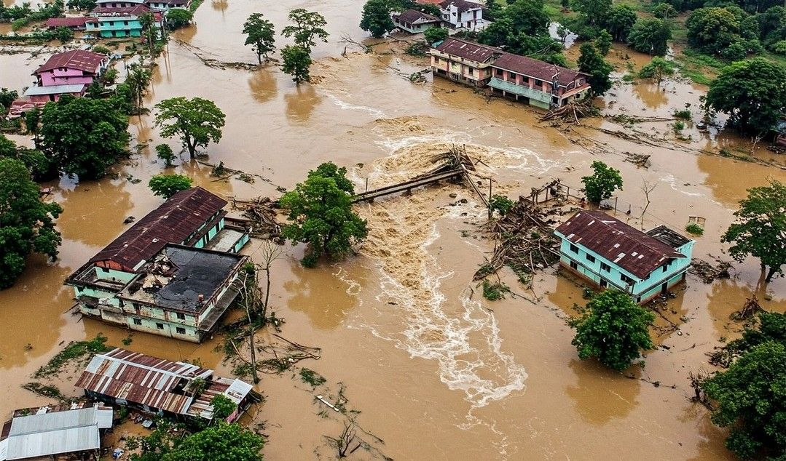

9:41
Report Flood

Report near your area
Location (text)
Pin exact location on map
Use my current location
Tap the map or use GPS to set marker. Drag to adjust.
Location pinned
Upload Photos
Tap to take photo or select from gallery
0 image(s) selected
Additional Details
Submit Report
Request Help
Hotlines
Report Flood
All Reports
Account Info
Submitting...